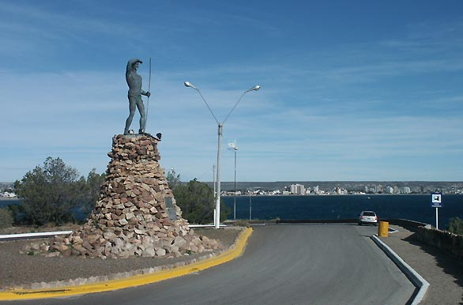
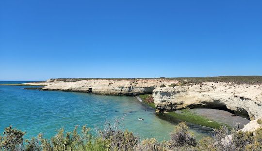

Historia
En 1779, Juan de la Piedra encabezó una expedición al golfo de San José y estableció una colonia de galesa. Sir Love Jones-Parry, un barón de Madryn, fue nombrado fideicomisarios de la Sociedad de Emigración en Liverpool para establecer una colonia galesa. En 1862, Love Jones-Parry y Lewis Jones viajaron a Argentina para negociar con el gobierno argentino y explorar las tierras patagónicas. Llegaron en 1863 y nombraron a la ciudad Puerto Madryn en su honor. La ciudad comenzó en 1865 cuando llegaron 150 galeses en el barco Mimosa. El asentamiento aumentó en la década de 1880 debido a la llegada del ferrocarril, que conectaba Puerto Madryn con Trelew. El crecimiento de la ciudad fue impulsado por el desarrollo de actividades ferroviarias y portuarias, apoyando al sector servicios. El primer traslado urbano de Puerto Madryn se realizó en 1906. El ferrocarril se cerró oficialmente en 1961, pero los cambios continuaron en la década de 1970, con el surgimiento del puerto de la ciudad y el establecimiento del puerto de la ciudad.

Turismo
En invierno, se realizan excursiones para el avistaje de ballenas franca, delfines, toninas overas, pingüinos, elefantes marinos y aves entre otros.
Durante la temporada de verano, las playas son muy concurridas, en donde además de baños de sol y agua se practican deportes náuticos como kayak, canotaje, windsurf, kitesurf y moto-esquí entre otros.
Los golfos San José y Nuevo son visitados principalmente para realizar "bautismos submarinos". Puerto Madryn es denominada "Capital Nacional del Buceo". Posee aguas cristalinas y serenas, lo que permite una penetración de luz hasta los 70 m de profundidad. Además se realiza buceo con animales (como lobos marinos) y viejas embarcaciones hundidas en el mar.18
Por el muelle Luis Piedrabuena pasan cruceros que tienen como destino el sur de la Argentina. También la ciudad cuenta con una terminal de ómnibus que recibe transportes terrestres de larga distancia que conectan a Puerto Madryn con el resto de la Argentina, y con el Aeropuerto El Tehuelche, que cuenta con varias frecuencias semanales desde varias ciudades Argentinas.
La ciudad de Puerto Madryn cuenta con múltiples alojamientos y hoteles, de todas las categorías y con gran variedad de servicios, tanto como destino de relax como de convenciones de negocios. La ciudad cuenta con más de 75 hoteles desde 5 estrellas para abajo, destacándose el Rayentray Puerto Madryn Hotel.
Los principales sitios de interés en la ciudad son el Museo municipal de Arte, el Museo provincial del Hombre y el Mar, el Ecocentro y el Museo del Desembarco. También se encuentra el centro comercial Portal de Madryn.